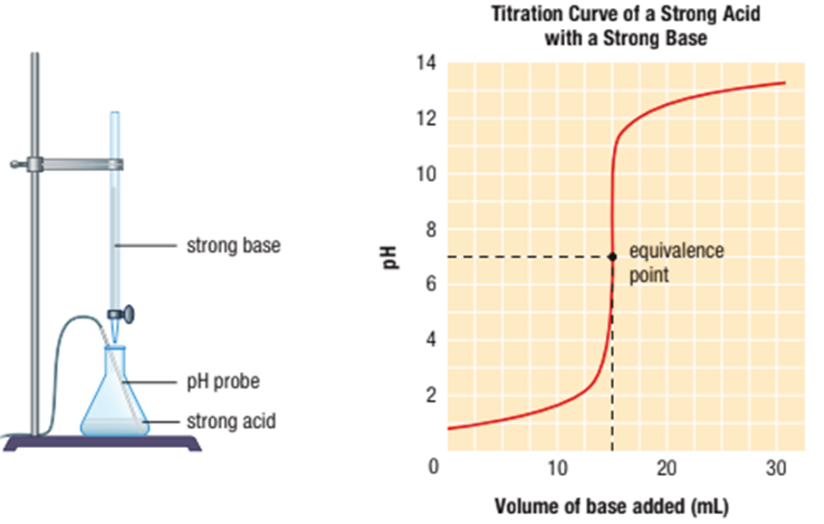

A titration is an analytical procedure used to determine the concentration of a solution. During a titration, a measured volume of a standardized solution called the titrant is gradually added to a flask containing a measured volume of a solution of unknown concentration.
Recall that a standardized solution is a solution whose concentration is precisely known. A burette is used to accurately measure the volume of titrant used. A burette is a tube that is typically calibrated with 0.1 mL divisions. The valve at one end of the burette is used to control the volume of titrant that leaves the burette.
A titration gives accurate results only when its endpoint coincides with its equivalence point. This means that the acid–base indicator chosen for the titration must change colour when the equivalence point is reached.
The pH of the solution starts off very low, when there is only acid in the flask. When the base is dripped into the flask the pH increases, slowly at first, as the base neutralizes the acid. Then a rapid increase in pH occurs as the base neutralizes the last traces of the acid. This occurs during the steep portion of the graph that includes the equivalence point.
|  |